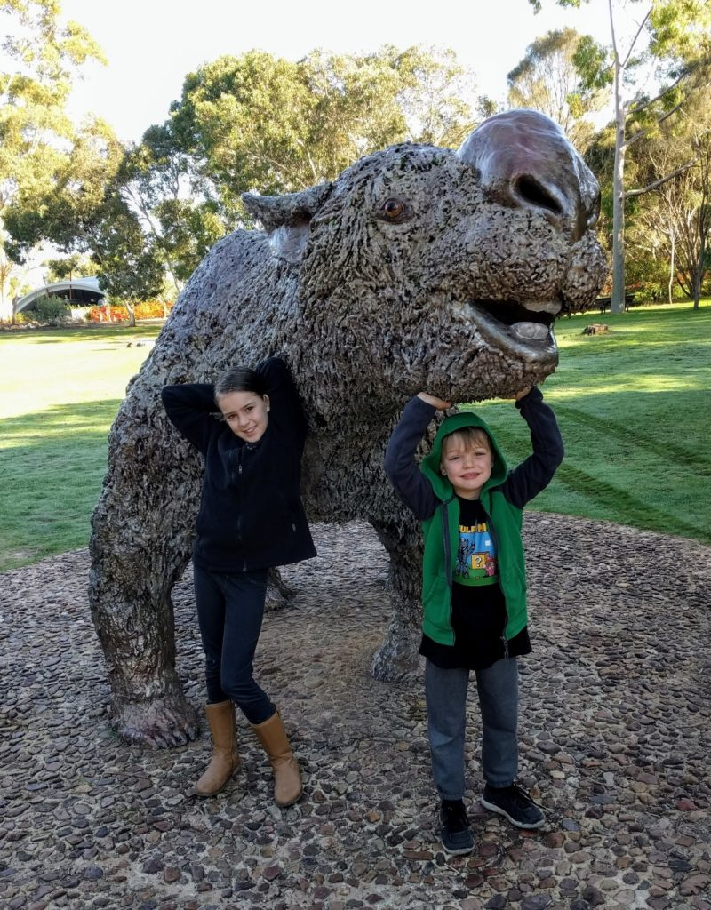

Day 40 – Naracoorte Caves
Naracoorte Caves National Park is one of those places with dozens or hundreds of cave formations in a relatively small area. The underlying limestone has been prone to dissolving with changes in climate, leaving behind an extensive cave network. It’s a very nice place to stay and camp.

What makes several of the caves in this park special is the sheer number and quality of fossil skeletons of large fauna. Through some quirk of fate, they’re acted as pit traps for large mammals for hundreds of thousands of years. Today we visited the Victoria Fossil Cave, site of the largest of these fossil “beds”.

A photo doesn’t really capture the scale of the fossil bed. It is a descending trough between 5 and 15 metres wide and 150 metres long. Starting at one metre deep, it gets to four metres deep at the bottom end. It’s estimated at around 5,000 tonnes, 80% of which is bone matter.
Some areas have been excavated by scientists, but most of it is still in-situ. It’s a graveyard for countless animals over more than half a million years.

Our group was small and our guide was great. We happily geeked out over the caves and fossils for ages.
Later on, we took the shorter self-guided tour through Wet Cave, a quite different type of cave. It consists of large spaces and massive columns.
Fun fact – these roof formations are called “avens”:

A fantastic day, all around. Even of you’re not interested in paleontology or speleology, this park is a highly recommended place to visit. Make a day of it.